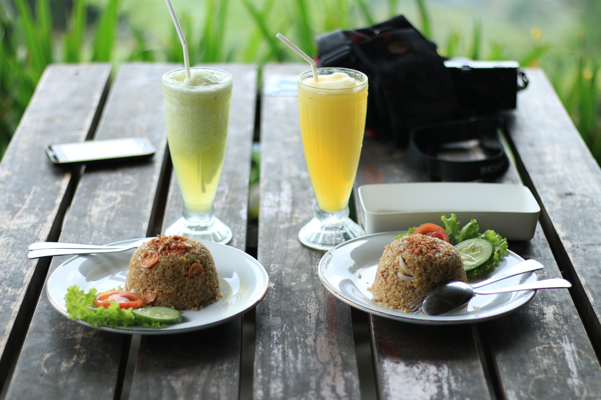

Selamat Datang
CafeInd adalah sebuah cafe yang menyediakan berbagai makanan dan minuman. Bahan yang digunakan adalah bahan yang terbaik dengan kualitas yang terjamin.
Makanan :

- 

Telor asin
Hidangan makanan telur asin dengan nasi hangat dan beberapa tambahan sayuran seperti tomat, timun, dan sayuran hijau yang segar.
Nasi Goreng
Hidangan makanan nasi yang digoreng dengan tambahan bumbu - bumbu yang membuat hidangan sedap dan lezat.
Burger
Burger yang terbuat dari roti dan daging yang berkualitas.